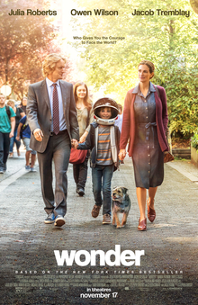

Wonder is a 2017 American comedy-drama directed by Stephen Chbosky, who co-wrote the screenplay with Steven Conrad and Jack Thorne. It is based on the 2012 novel by R. J. Palacio and stars Julia Roberts, Owen Wilson, Jacob Tremblay, Mandy Patinkin, and Daveed Diggs.
The film follows a boy named August "Auggie" Pullman with Treacher Collins syndrome as he tries to fit in. The film was released in the United States on November 17, 2017, by Lionsgate. It received positive reviews from critics and grossed $315 million worldwide on a $20 million production budget. At the 90th Academy Awards, the film was nominated for Best Makeup and Hairstyling.
A spin-off and prequel film, White Bird, released in October 2024, with Bryce Gheisar reprising his role.

For Halloween, Auggie dresses as Ghostface from the previous year when Daisy ruins his planned Boba Fett costume. While entering his homeroom, Auggie overhears Jack, who does not recognize him, joining Julian Albans, the class bully, and his friends, Amos Conti, Miles Noury, and Henry Joplin, in making fun of Auggie behind his back. Auggie feigns sick, forcing his mother to abandon her mother-daughter day with Via to pick him up. Though she is hurt, Via convinces Auggie to go trick-or-treating with her, as she has been rejected by her own best friend, Miranda Navas.